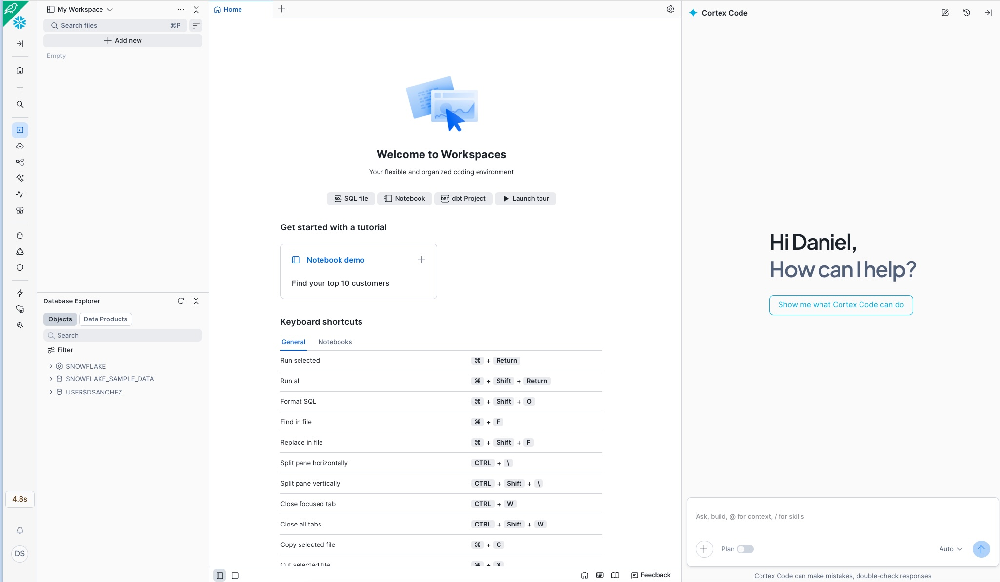
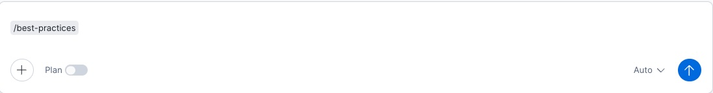

1 Qu'est-ce que Cortex Code ?
Cortex Code est l'assistant de programmation IA intégré à Snowsight, l'interface web de Snowflake. Il permet de générer du code SQL, Python et Streamlit directement à partir du langage naturel, accélérant le développement de solutions analytiques.
Fonctionnalités principales
- Génération de code SQL — CREATE TABLE, INSERT, vues, procédures, fonctions
- Cortex AI/ML — ML.CLASSIFICATION, ML.FORECAST, CORTEX.COMPLETE, CORTEX.SENTIMENT, Cortex Search
- Feature Store — Entity, FeatureView, get_features()
- Model Registry — log_model(), get_model(), versionnage
- Streamlit — Génération de dashboards interactifs
- Tasks & Pipelines — Automatisation et orchestration
Important : Cortex Code génère du code qui s'exécute dans votre compte Snowflake. Tout reste dans votre environnement — aucune dépendance externe, aucune donnée envoyée à l'extérieur.
2 Prérequis
Avant de commencer, assurez-vous d'avoir configuré les éléments suivants :
Compte Snowflake
Important : Demandez à votre représentant Snowflake la création des comptes nécessaires pour votre équipe. Ainsi, nous nous assurons que toutes les fonctions de Cortex Code et Cortex AI sont prises en charge : ML.CLASSIFICATION, ML.FORECAST, CORTEX.COMPLETE, CORTEX.SENTIMENT, Cortex Search et Feature Store.
Accéder à Cortex Code dans Snowsight
Une fois connecté à votre compte, le panneau de l'assistant Cortex Code apparaît sur la partie droite de l'écran. C'est votre compagnon de programmation IA pour exécuter tous les prompts de ce catalogue :

Prêt : Si vous voyez le panneau Cortex Code avec le message «How can I help?» à droite, vous pouvez commencer à copier-coller les prompts de n'importe quel cas d'usage.
Compte et permissions
- Compte Snowflake avec accès à Snowsight
- Rôle avec permissions CREATE DATABASE, CREATE SCHEMA, CREATE TABLE
- Warehouse actif (recommandé : taille S pour le développement, M pour la production)
- Cortex Code activé dans le compte (disponible dans toutes les éditions)
Pour les fonctions avancées
- Cortex AI/ML : Nécessite que la région prenne en charge les Cortex Functions (AWS us-west-2, us-east-1, eu-west-1, etc.)
- Feature Store : Package
snowflake-ml-pythondisponible - Model Registry : Permissions pour créer des modèles dans le schéma
- Streamlit : Permission CREATE STREAMLIT dans le schéma
Note sur les régions : Certaines fonctions Cortex AI (comme ML.CLASSIFICATION ou CORTEX.COMPLETE) nécessitent des régions spécifiques. Consultez la documentation de disponibilité pour vérifier votre région.
3 Ouvrir Cortex Code dans Snowsight
Cortex Code est intégré à plusieurs surfaces de Snowsight. Voici comment y accéder :
Option A — Depuis les Workspaces
- Allez dans Snowsight → Projects → Workspaces
- Créez ou ouvrez un workspace existant
- Cliquez sur l'icône Cortex (✨) dans la barre latérale droite, ou utilisez le raccourci Cmd+Shift+Space (Mac) / Ctrl+Shift+Space (Windows)
- Le panneau Cortex Code s'ouvrira à droite de l'éditeur
Astuce : Le panneau Cortex Code conserve le contexte de votre workspace. Si vous avez des tables référencées dans l'éditeur, Cortex Code les utilisera comme contexte pour générer un code plus précis.
4 Ajouter la Skill Best-Practices à Cortex Code
Pour améliorer les performances et réduire les coûts du code généré, vous pouvez ajouter la skill best-practices à Cortex Code. Une fois chargée, elle sera disponible avant chaque prompt et orientera l'assistant vers la génération de code plus efficace et optimisé pour Snowflake.
4.1 — Télécharger la skill
Téléchargez le fichier compressé contenant la skill best-practices et enregistrez-le sur votre ordinateur :
Télécharger best-practices.zip
4.2 — Décompresser localement
Décompressez le fichier téléchargé sur votre ordinateur. Vous obtiendrez un dossier nommé best-practices contenant les fichiers de la skill prêts à être importés.
Astuce : Décompressez dans un emplacement facile à retrouver (par exemple le Bureau ou votre dossier Téléchargements), car à l'étape suivante vous devrez sélectionner ce dossier depuis Snowsight.
4.3 — Importer la skill dans Cortex Code sur Snowsight
Dans Snowsight, dans le panneau Cortex Code, cliquez sur le bouton +, sélectionnez l'option «Upload Skill Folder(s)» et choisissez le dossier best-practices que vous venez de décompresser :

Note : Le bouton + se trouve en haut du panneau Cortex Code, à côté du sélecteur de contexte. En cliquant, un menu apparaît — sélectionnez «Upload Skill Folder(s)» et naviguez jusqu'au dossier décompressé de la skill.
4.4 — Utiliser la skill avant chaque prompt
Une fois importée, la skill sera disponible dans votre session Cortex Code. Tapez la commande /best-practices avant chaque prompt pour l'activer et obtenir un code plus efficace :

Prêt : Avec la skill active, Cortex Code appliquera automatiquement les bonnes pratiques Snowflake à tout le code généré : utilisation efficace des warehouses, clustering keys, optimisation des requêtes et réduction des coûts de crédits.
5 Flux de travail avec les prompts
Chaque cas d'usage de ce catalogue comprend entre 8 et 11 prompts séquentiels. Le flux recommandé est :
le cas d'usage
le guide
Cortex Code
chaque prompt
exécuter
Structure de chaque cas d'usage
En cliquant sur «Voir les prompts» sur n'importe quelle carte de cas d'usage, vous verrez :
- Étape 1 — Configurer l'environnement : Crée la base de données, le schéma et le warehouse. Toujours le premier prompt.
- Étapes 2-4 — Créer les données : Génère des tables avec des données synthétiques représentatives du domaine.
- Étapes 5-7 — Analyser et modéliser : Features, modèles ML, fonctions Cortex AI, Feature Store ou Model Registry.
- Étapes 8-9 — Dashboard : Code Streamlit pour la visualisation interactive.
- Dernière étape — Pipeline : Tasks pour l'automatisation et le fonctionnement continu.
Séquentialité : Les prompts sont conçus pour être exécutés dans l'ordre. Chaque étape dépend des objets créés aux étapes précédentes. Ne sautez pas d'étapes.
6 Exécuter un cas d'usage pas à pas
Voyons le processus complet avec un exemple pratique :
6.1 — Sélectionner le secteur et le cas d'usage
- Rendez-vous au catalogue des secteurs
- Choisissez un secteur (par exemple, Banque)
- Parcourez les cartes ou utilisez la recherche pour trouver un cas d'usage
- Lisez la section «Problème» pour comprendre le besoin métier
6.2 — Lire le guide
- Cliquez sur «Voir le guide»
- Lisez les sections : Contexte, Focus, Défi, Objectifs, Fonctionnalités, Données, Stratification et Utilisation
- Cela vous donnera le cadre conceptuel avant de générer du code
6.3 — Exécuter les prompts
- Cliquez sur «Voir les prompts»
- Dans Snowsight, ouvrez un workspace et activez Cortex Code
- Pour chaque étape :
- Cliquez sur «Copier» sur le prompt
- Collez-le dans le panneau Cortex Code
- Cortex Code générera le code SQL/Python correspondant
- Vérifiez-le avant l'exécution (voir section 7)
- Cliquez sur «Run» ou «Apply»
- Vérifiez que l'exécution s'est bien déroulée
- Passez au prompt suivant
Résultat attendu : À la fin de toutes les étapes, vous aurez : une base de données avec des tables de données synthétiques, des modèles ML entraînés, des fonctions Cortex AI configurées et un dashboard Streamlit fonctionnel.
7 Vérifier et valider le code généré
Cortex Code génère du code de haute qualité, mais vous devez toujours le vérifier avant l'exécution. Points clés :
Checklist de vérification
- Noms des objets : Vérifiez que la base de données, le schéma et le warehouse correspondent à votre environnement
- Taille du warehouse : Ajustez la taille selon votre charge (S pour le développement, M-L pour la production)
- Volume de données synthétiques : Les prompts suggèrent des volumes représentatifs ; ajustez selon vos besoins
- Modèles LLM : Vérifiez que le modèle référencé (ex.
llama3.1-70b,mistral-large2) est disponible dans votre région - Fonctions ML : Confirmez que ML.CLASSIFICATION, ML.FORECAST sont disponibles
- Permissions : Votre rôle doit disposer des grants nécessaires sur les objets
Adapter aux données réelles
Les prompts génèrent des données synthétiques pour la démonstration. Pour passer en production :
- Remplacez les
CREATE TABLE ... INSERTsynthétiques par desCREATE VIEWouSELECTsur vos tables réelles - Ajustez les noms de colonnes à votre modèle de données
- Modifiez les seuils et paramètres métier
- Conservez la structure des features, modèles et dashboards
Données synthétiques : Les données générées sont fictives et représentatives. Ne pas utiliser dans des rapports métier réels. Elles servent à valider le pipeline de bout en bout avant de connecter les données réelles.
8 Déployer des dashboards Streamlit
Presque tous les cas d'usage incluent un prompt pour générer un dashboard Streamlit. Voici comment le déployer :
8.1 — Générer l'application Streamlit
- Exécutez le prompt «Dashboard» (généralement l'avant-dernière étape)
- Cortex Code générera du code Python avec Streamlit
- Allez dans Snowsight → Projects → Streamlit
8.3 — Vérifier et partager
- Vérifiez que tous les graphiques et tableaux se chargent correctement
- En cas d'erreurs, vérifiez que les tables et vues existent (créées aux étapes précédentes)
- Partagez l'application avec d'autres utilisateurs via «Share»
9 Automatiser avec Tasks et Pipelines
Le dernier prompt de chaque cas d'usage crée des Tasks Snowflake pour automatiser le pipeline :
Ce qui est automatisé
- Ingestion de données : Chargement périodique depuis les sources (quotidien, hebdomadaire)
- Mise à jour des features : Recalculer les indicateurs et métriques
- Scoring ML : Exécuter les modèles sur les nouvelles données
- Alertes : Notifications en cas de dépassement des seuils
- Réentraînement : Mettre à jour les modèles périodiquement
Structure typique des Tasks
DAG de Tasks : Les cas d'usage avancés créent des DAGs (Directed Acyclic Graphs) où des Tasks dépendent les unes des autres. Cortex Code génère automatiquement les dépendances avec AFTER.
10 Vérifier les coûts consommés
Après avoir exécuté un ou plusieurs cas d'usage, utilisez ce prompt dans Cortex Code pour obtenir un résumé consolidé de tous les crédits et tokens consommés pour la journée en cours : warehouses, fonctions Cortex AI, modèles ML et Cortex Code dans Snowsight.
Prompt — Résumé des coûts du jour
Copiez-collez ce prompt directement dans Cortex Code (pensez à activer /best-practices avant) :
Note : Les données d'ACCOUNT_USAGE ont une latence allant jusqu'à 45 minutes. Si vous venez d'exécuter un cas d'usage et qu'aucune donnée n'apparaît, attendez quelques minutes et relancez la requête.
Alternative : Si CORTEX_FUNCTIONS_USAGE_HISTORY n'est pas disponible dans votre compte, Cortex Code remplacera automatiquement cette section par METERING_DAILY_HISTORY avec service_type = 'AI_SERVICES'.
11 Conseils et bonnes pratiques
Développement
- Utilisez toujours
/best-practicesavant chaque prompt — Activez la skill pour que Cortex Code génère un code optimisé en performance et en coûts dès le départ - Exécutez prompt par prompt — N'essayez pas d'exécuter tous les prompts d'un coup ; chaque étape valide la précédente
- Nommez vos objets de manière cohérente — Les prompts suggèrent des noms descriptifs comme
BANKING_FRAUD_DB - Sauvegardez le worksheet — Chaque cas d'usage génère beaucoup de code ; sauvegardez fréquemment
Cortex Code
- Soyez spécifique dans les prompts — Les prompts du catalogue sont déjà détaillés, mais vous pouvez ajouter le contexte de votre activité
- Itérez sur le code — Si le code généré ne correspond pas exactement à vos besoins, demandez à Cortex Code de l'ajuster
- Utilisez le contexte du worksheet — Si vous avez déjà des tables dans l'éditeur, Cortex Code les référencera automatiquement
- Combinez les prompts si nécessaire — Pour les utilisateurs avancés, vous pouvez combiner 2-3 étapes dans un seul prompt plus long
Production
- Remplacez les données synthétiques par des réelles — Le pipeline fonctionne de la même manière, vous ne changez que la source de données
- Configurez des Resource Monitors — Contrôlez la consommation de crédits du warehouse
- Vérifiez les permissions — Utilisez des rôles spécifiques pour chaque projet (data_scientist, analyst, etc.)
- Surveillez les Tasks — Vérifiez l'historique d'exécution dans Activity → Task History
- Versionnez les modèles — Les cas d'usage avec Model Registry incluent déjà le versionnage ; utilisez-le pour l'A/B testing
12 Questions fréquentes
best-practices.zip), la décompresser sur votre ordinateur et importer le dossier dans Cortex Code via le bouton + dans Snowsight. Une fois importée, elle sera disponible avec la commande /best-practices et vous n'aurez pas à répéter le processus.